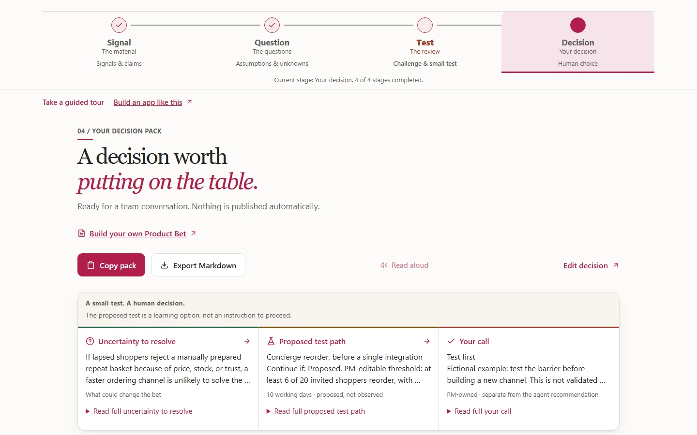
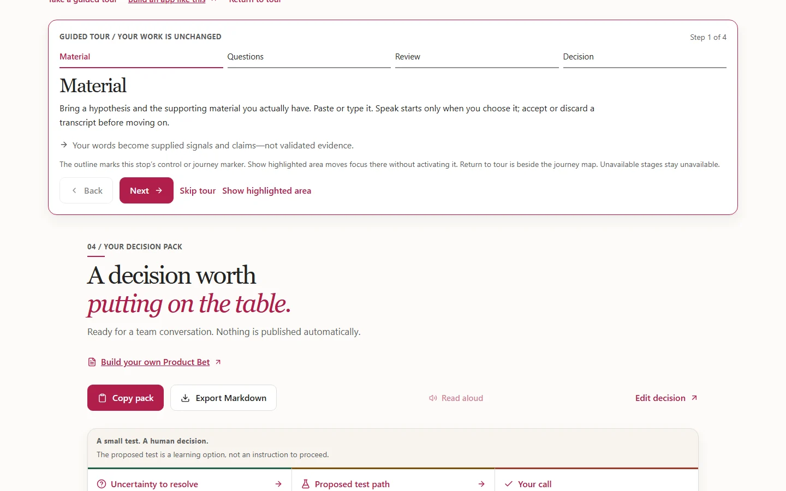

Try an example
Use pre-authored fictional material at your own pace. The unchanged example needs no keys. Editing the bet or interpretation switches to live analysis and requires your own configuration.
THE MOMENT BEFORE BUILDING
A promising quote. A metric. A hunch. Suddenly, a feature decision.
Product Bet Review Studio helps you slow down the leap—not the team. Turn supplied material into useful questions, a small proposed test and a decision you can explain.
Open without a shared password. The Presenter Demo and unchanged fictional example need no provider keys. Live analysis and voice require your own provider setup.
“Customers keep asking.”
A useful starting point. Not yet a reason to build.
THE PRODUCT'S POINT OF VIEW
AI can organize and challenge what you supply. It cannot turn a quote into representative research, an assumption into evidence, or a proposed test into a result.
The Studio makes the reasoning inspectable. People keep responsibility for the decision—including the choice to reshape or stop.
01 / THE METHOD
Explore a move. See what enters, what leaves, and what still needs human judgment.
What do we actually know?
Material → contextWhere does the leap begin?
Context → unknownsHow could we be wrong?
Unknowns → learningWhat will we do next—and why?
Learning → a human callInput A hypothesis, permissioned quotes, observations and constraints with source labels.
Output → Question A coherent starting point, not a claim of proof.
Human judgment Is the material relevant and representative? What does it not establish?
Input The supplied context and your corrections to its interpretation.
Output → Test An accepted interpretation, supported answers and explicit gaps.
Human judgment Leave unsupported answers unknown. Do not invent evidence to fill the form.
Input The interpretation, answers and original material carried forward.
Output → Decision Source-linked reasoning, a counterargument, failure paths and a proposed small test.
Human judgment Is this the right uncertainty to reduce? A proposed threshold is not a measured result.
Input The advisory review, plus your own constraints and judgment.
Output → Next move A human choice and rationale in an intentionally exported decision pack.
Human judgment Proceed, test first, reshape or stop. You may disagree with the agent.
02 / INSIDE THE STUDIO
Four real screens. One fictional grocery bet. Open each screen to follow the handoff.
Genuine captures of the live application. Every pictured claim, quote, number and decision is fictional and unverified. No study or test was conducted; no provider calls were made.



Use pre-authored fictional material at your own pace. The unchanged example needs no keys. Editing the bet or interpretation switches to live analysis and requires your own configuration.
An optional, replayable orientation alongside your own work. It highlights controls without changing material or advancing workflow stages.

A separate, deterministic click-through. Back, Next, Replay and Exit leave your work unchanged. It makes no provider calls and does not request the microphone.

03 / WHAT YOU TAKE AWAY
The decision pack keeps these different kinds of statements distinguishable. It does not flatten them into certainty.
A source-linked observation, with its scope.
The leap the idea depends on.
A gap—not invented confidence.
A test and proposed threshold, not a result.
Proceed, test, reshape or stop—with a rationale.
04 / BUILD YOUR OWN PRODUCT BET
Bring a product or feature idea from any domain. Work alone or in a pair. You are not copying the Studio or building an app during this exercise.
The outcome: a build-ready starting brief. A user, a hypothesis, the evidence and unknowns, one risky assumption, a small test, a first build slice and a human next-step decision. Not a finished app. Not a complete roadmap.
Go to the blank canvas ↓Pick one situation, not “everyone.” What is hard for that person today?
“We believe helping [user] do [action] will improve [outcome] because [signal].”
Record the evidence, its source and limits. Name what remains unknown.
Choose the riskiest assumption. What observation would prove the idea wrong?
Propose a success threshold before running it. Label it a proposal—not a measured result.
One narrow user flow. Add only one or two “later” possibilities, not a full roadmap.
Test first, proceed, reshape or stop. Record why, who owns the next step and what happens next.
YOUR WORKING BRIEF / BLANK BY DESIGN
Entries live only in this page's memory while it is open. We do not send, store or automatically save your input. Refreshing or leaving clears it. Download or print deliberately to keep your own copy; avoid confidential material on a shared device.
Clear every canvas field? This cannot be undone. Download first if you need a copy.
A blank starting brief. No research or results are generated for you.
All material and numbers below are fictional and unverified. No interviews, observations or tests were conducted. The figures are proposed workshop parameters, not measured results. This example never fills or replaces your blank canvas.
Keep this page as the session companion; no separate slide deck is needed. The 20-minute exercise is inside this 45-minute run-of-show, not extra coding time.
Ask: “When did a promising signal last become a feature too quickly?” Show the four moves. Say: “Today you will examine your own idea—not copy this product.”
Open the live app's Presenter Demo for a deterministic walkthrough, or use these four screenshots. Label the grocery material fictional. At each stop ask: “What is known, what is assumed, and who makes the call?” Distinguish the hands-on example from the guided tour.
Use the seven visible time boxes above. In pairs, choose one idea: one person writes, the other asks “What would make this wrong?” Swap roles at minute 8 of the exercise. Announce checkpoints at minutes 8, 12, 16 and 19. No account, AI tool or coding environment is needed.
Invite a pair from different domains where possible. Give each about 60–90 seconds: “Our user/problem; the assumption that could break the idea; our smallest test and proposed threshold; our human next step.” Ask the room for one alternative explanation—not a feature wishlist.
Ask everyone to print or download their own canvas before leaving. Point to the live app and builder pack. Say: “You have a starting brief, not a finished app. Validate the bet and scope before asking an agent to build.”
Before the room arrives: open the page and live Presenter Demo; keep these screenshots as a fallback. Offer paper canvases for participants who prefer not to type. Do not collect their work unless they separately choose to share it.
05 / BUILDER METHODOLOGY
After the session, turn your thinking into instructions. Do not ask a coding agent to fill evidence gaps with invented certainty.
Keep the user, problem, evidence limits, assumption, small test and human decision. Resolve the biggest scope questions.
Describe one user flow, first-slice boundaries, non-goals, states, accessibility and acceptance checks. Keep unknowns visible.
Ask GitHub Copilot or another coding agent for that slice, with constraints and checks. Review the code, behavior and claims before any release.
The actual authored pack includes PRD and agent-prompt templates, screen/state, test/accessibility, privacy and readiness checklists, plus a clearly fictional worked example.
The Studio's guide is a separate learning path—not your workshop project. Use the methodology for an idea in your own domain.

06 / TRUST + LIMITS
Neither the AI output nor this showcase is independent research validation or production certification.
No account, provider calls, microphone, analytics or participant-input submission. Canvas entries stay in page memory. Only deliberate print/download creates your copy.
The page loads its own public assets and link configuration. GitHub Pages receives ordinary hosting requests; following a link opens that site's policies. Browser extensions and print/download storage are outside the page's control.
Public without a shared password. The Presenter Demo and unchanged fictional example need no keys. Live analysis requires your own Claude setup; voice and translation require your own Sarvam setup.
Keys stay in tab memory and pass through the same-origin HTTPS backend for the selected provider operation. Use only a backend/operator you trust. Recording additionally needs a supported browser and microphone consent.
The app keeps session work in memory by default. Explicit draft consent saves only idea/supporting-material fields on that device; a selected theme is also saved. There is no app review database.
Live actions send relevant content to their provider; provider retention policies are separate. AI can be wrong. Real-provider quality and wider device, browser and assistive-technology validation remain separate work.
Screenshots contain only fictional, unverified material from the live release. No personal keys, browser-state exports, traces or real participant content are published. Source and asset provenance are available in the public repository.
THE NEXT MOVE IS YOURS
See the fictional journey in Presenter Demo, explore the example independently, or bring your own material. Keep the decision yours.
Open without a shared password. The Presenter Demo and unchanged fictional example need no provider keys. Live analysis and voice require your own provider setup.